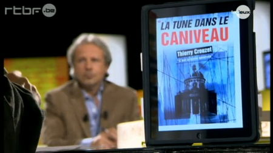

La tune dans le caniveau - chroniques
Ils en parlent de La tune dans le caniveau
Présentation du texte chez Numériklivres...
Communiqué de presse de Numériklivres...
Le Monde (31/10/2010)

Dans les blogs
- Nessy (18/10/2010)
- blog-o-book.com (19/10:2010)
- actualitte.com (20/10/2010)
- ebouquin.fr (20/10/2010)
- L'arbracigogne (20/10/2010)
- tulisquoi.net (22/10/2010)
- Fnacbook: lire les même bouses mais en numérique (22/10/2010)
- babelio.com (22/10/2010)
- lire-c-delivrant (24/10/2010)
- Tortoise's Times Tree (25/10/2010)
- Stéphane Laborde (25/10/2010)
- Florence Clerfeuille (29/10/2010)
- babelio.com (2/11/2010)
- Pierre Lancien (3/11/2010)
- Nicolas Ancion (3/11/2010)
- Zoupic (4/11/2010)
- Les lectures de Mélusine (5/11/2010)
- L'Hérétique (6/11/2010)
- L'Hérétique (8/11/2010)
- Ferocias (11/11/2010)
- Histoires de livres (13/11/2010)
- Paganiz (19/11/2010)
- RSF Blog (26/11/2010)
- Abracadabibliothesque (27/11/2010)
- A.C. de Haenne (27/11/2010)
- Le regard de Janus (29/11/2010)
- Nessy pour la V2 (1/12/2010)
- Stéphane Laborde (15/12/2010)
Sommaire | Texte publié vendredi 26 novembre 2010